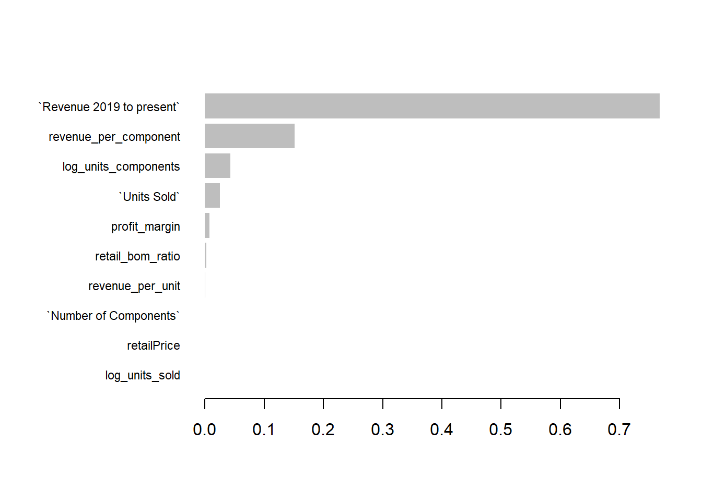

library(tidyverse)
library(caret)
library(xgboost)
library(Matrix)CravenSpeed Profit Prediction
craven_train <- readRDS(gzcon(url("https://github.com/cd-public/D505/raw/refs/heads/master/dat/craven_train.rds")))
colnames(craven_train) [1] "lookupId" "First Order (from sales data)"
[3] "src_www" "src_iphone"
[5] "src_android" "src_ipad"
[7] "src_manual" "src_facebookshop"
[9] "src_external" "src_Amazon FBM"
[11] "January" "February"
[13] "March" "April"
[15] "May" "June"
[17] "July" "August"
[19] "September" "October"
[21] "November" "December"
[23] "pct_Direct Sales" "pct_Orders for Stock"
[25] "pct_Drop Shipments" "pct_Platypus"
[27] "pct_Moss Motors Only" "pct_R&D Club"
[29] "Units Sold" "Base Product Sku"
[31] "Listing Type" "Unit Weight (pounds)"
[33] "retailPrice" "make"
[35] "model" "yearMin"
[37] "yearMax" "Revenue 2019 to present"
[39] "Number of Components" "BOM Cost"
[41] "Sales Channel" "Product Type"
[43] "Designer" "Main Component Material"
[45] "Main Component MFG Process" "Main Component Finishing Process"engineer <- function(df) {
df <- df %>%
filter(
!is.na(`Units Sold`), `Units Sold` > 0,
!is.na(`Revenue 2019 to present`), `Revenue 2019 to present` > 0
) %>%
mutate(
Profit = `Revenue 2019 to present` - `BOM Cost` * `Units Sold`,
revenue_per_component = `Revenue 2019 to present` / (`Number of Components` + 1),
log_units_components = log1p(`Units Sold`) * `Number of Components`,
profit_margin = Profit / `Revenue 2019 to present`,
revenue_per_unit = `Revenue 2019 to present` / `Units Sold`,
retail_bom_ratio = retailPrice / (`BOM Cost` + 1),
log_units_sold = log1p(`Units Sold`)
) %>%
select(
`Revenue 2019 to present`,
revenue_per_component,
`Units Sold`,
log_units_components,
profit_margin,
revenue_per_unit,
retailPrice,
`Number of Components`,
retail_bom_ratio,
log_units_sold,
Profit
) %>%
drop_na()
}
ds <- engineer(craven_train)
library(caret)
set.seed(42)
model <- train(
Profit ~ .,
data = ds,
method = "rf",
trControl = trainControl(method = "cv", number = 5),
tuneGrid = expand.grid(mtry = c(5, 10, 15, 20))
)
print(model)Random Forest
1503 samples
10 predictor
No pre-processing
Resampling: Cross-Validated (5 fold)
Summary of sample sizes: 1203, 1203, 1201, 1203, 1202
Resampling results across tuning parameters:
mtry RMSE Rsquared MAE
5 785.6861 0.9337848 133.6646
10 726.9101 0.9434953 114.7684
15 710.4263 0.9446036 113.3255
20 714.3349 0.9437967 113.5198
RMSE was used to select the optimal model using the smallest value.
The final value used for the model was mtry = 15.library(xgboost)
library(Matrix)
library(caret)
library(dplyr)
ds <- engineer(craven_train)
if (!"Profit" %in% colnames(ds)) {
stop("The column 'Profit' is missing.")
}
x_data <- model.matrix(Profit ~ . -1, data = ds)
y_data <- ds$Profit
dtrain <- xgb.DMatrix(data = x_data, label = y_data)
set.seed(42)
xgb_cv <- xgb.cv(
data = dtrain,
nrounds = 1000,
nfold = 5,
objective = "reg:squarederror",
eval_metric = "rmse",
early_stopping_rounds = 10,
print_every_n = 25,
eta = 0.05,
max_depth = 6,
subsample = 0.8,
colsample_bytree = 0.8
)[1] train-rmse:3003.862870+88.782498 test-rmse:2983.491931+389.148399
Multiple eval metrics are present. Will use test_rmse for early stopping.
Will train until test_rmse hasn't improved in 10 rounds.
[26] train-rmse:1145.563034+66.700074 test-rmse:1214.072808+465.827428
[51] train-rmse:535.669991+71.924483 test-rmse:783.970846+474.285743
[76] train-rmse:286.215888+59.545122 test-rmse:689.542141+463.992003
[101] train-rmse:163.478625+43.547866 test-rmse:672.896859+454.091778
[126] train-rmse:95.573812+26.743743 test-rmse:666.967911+451.983631
[151] train-rmse:59.989610+16.787073 test-rmse:665.214692+450.208437
Stopping. Best iteration:
[162] train-rmse:50.632220+14.294599 test-rmse:664.646431+449.975313best_nrounds <- xgb_cv$best_iteration
xgb_model <- xgboost(
data = dtrain,
nrounds = best_nrounds,
objective = "reg:squarederror",
eval_metric = "rmse",
eta = 0.05,
max_depth = 6,
subsample = 0.8,
colsample_bytree = 0.8,
verbose = 0
)
print(paste("Final CV RMSE:", min(xgb_cv$evaluation_log$test_rmse_mean)))[1] "Final CV RMSE: 664.646431205518"xgb.importance(model = xgb_model) %>%
xgb.plot.importance(top_n = 10)